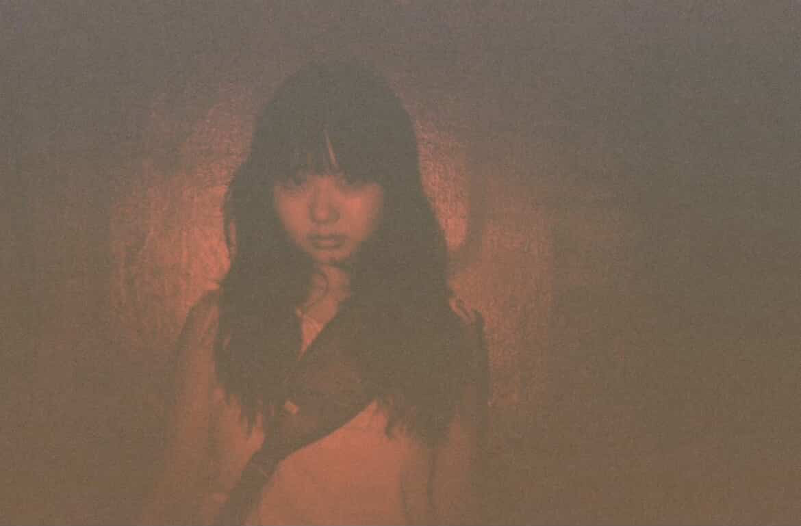

3人組バンド「urraca」のギターボーカル、晴山 和。2023年の結成以来、 独自のサウンドスケープを追求し続ける彼女に、音楽への向き合い方について話を聞いた。

バンドの始まり
── urracaを結成したきっかけを教えてください。
もともと一人で曲を作っていたんですけど、ライブハウスで出会ったメンバーと セッションしたときに「あ、これだ」って感覚があって。それぞれ全然違う音楽を 聴いてきたんですけど、なぜか合わさると一つの景色が見えるというか。 それがurracaの始まりですね。
── バンド名の由来は？
urracaはスペイン語でカササギのことなんです。白と黒のコントラストが美しい鳥で、 僕らの音楽にも相反する要素が同居しているところが似ているなと思って。 静と動、美しさと荒々しさ、そういうものを一つの曲の中に共存させたいんです。
楽曲制作について
── 曲はどのように作っていますか？
基本的にはギターを弾きながらメロディを探すところから始まります。 歌詞とメロディが同時に出てくることもあれば、リフだけが先に浮かぶこともある。 最近は散歩中に浮かんだフレーズをボイスメモに残して、あとでスタジオで形にする ことが多いですね。
── 歌詞を書く上で意識していることは？
具体的すぎないこと。聴く人それぞれの経験に重なるような余白を残したいんです。 でも抽象的すぎると伝わらないから、そのバランスは常に悩んでいます。 日常の中にある小さな違和感とか、言葉にしにくい感情を掬い上げたい。
ライブへのこだわり
── ライブで大切にしていることは？
音源とは違うものを見せたいという気持ちが強いです。同じ曲でもその日の空気や お客さんの反応で変わるし、変わるべきだと思っていて。録音物は一つの完成形だけど、 ライブはその瞬間にしか存在しない音楽で、それが好きでバンドをやっている部分がある。
── 最近のライブで印象に残っていることは？
先月の渋谷でのライブですかね。新曲を初めて演奏したんですけど、 イントロの時点でフロアの空気が変わったのが分かって。まだ誰も知らない曲なのに、 音だけで何かが伝わった瞬間。あれは嬉しかったです。
これからの展望
── 今後の予定を教えてください。
夏にアルバムを出す予定で、今はそのレコーディングの真っ最中です。 今回は今までよりも実験的なアプローチを取り入れていて、自分たちでも どういう作品になるか分からない部分があって、それがすごく楽しい。 完成したらツアーも回りたいですね。
── 最後に、音楽を続ける理由を教えてください。
うーん、理由…。やめる理由がないからですかね。音楽を作ることは僕にとって 呼吸に近いもので、意識的にやっているというより、やらないと生きていけない。 大げさに聞こえるかもしれないけど、本当にそういう感覚なんです。 聴いてくれる人がいる限り、いや、いなくても多分続けていると思います。
── ありがとうございました。